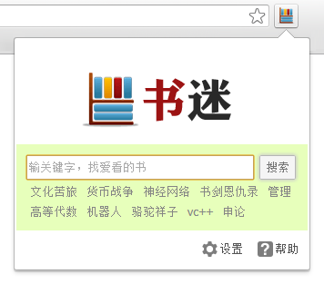
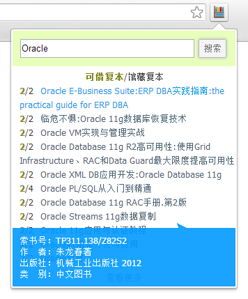
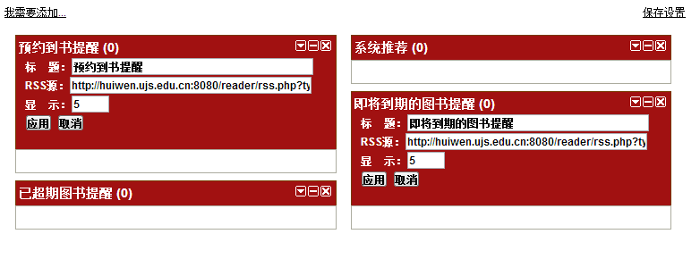

关于书迷
版本：1.0
作者：CodeColorist
安装本插件后，豆瓣图书/亚马逊/京东商城/当当网的页面中会自动出现该书在江苏大学图书馆的借阅情况。
您还可以通过单击本插件的图标快速打开搜索页面，查找您喜爱的书籍。
还书提醒功能让您不必担心借阅超时。
淘书
精确查找
您可以通过关键字检索的方式查找您喜爱的书籍。

在搜索框键入关键字，单击“搜素”即可。

在结果列表中将会显示图书的可借复本数、馆藏复本数和标题。将鼠标移动到标题上，即可弹出气球查看书籍的作者、出版社、索书号、类别等详细信息。
首页的搜索框的底部会有今日图书馆系统的热门关键字，可以看看大家都对什么书感兴趣。
设定还书提醒
这个功能作者也有些怀疑有没有必要编写，因为图书馆的OPAC系统是支持设置邮件提醒的，结合手机邮箱等会更方便。在此还是比较推荐使用图书馆系统自带的提醒功能。
要想设置自动还书提醒，您需要先找到自己的ID。首先登录汇文OPAC系统，选择我的图书馆，找到我的首页，拖动任意一项RSS订阅项目，保存。

在这里编辑RSS项目，便可以看到您的ID了。